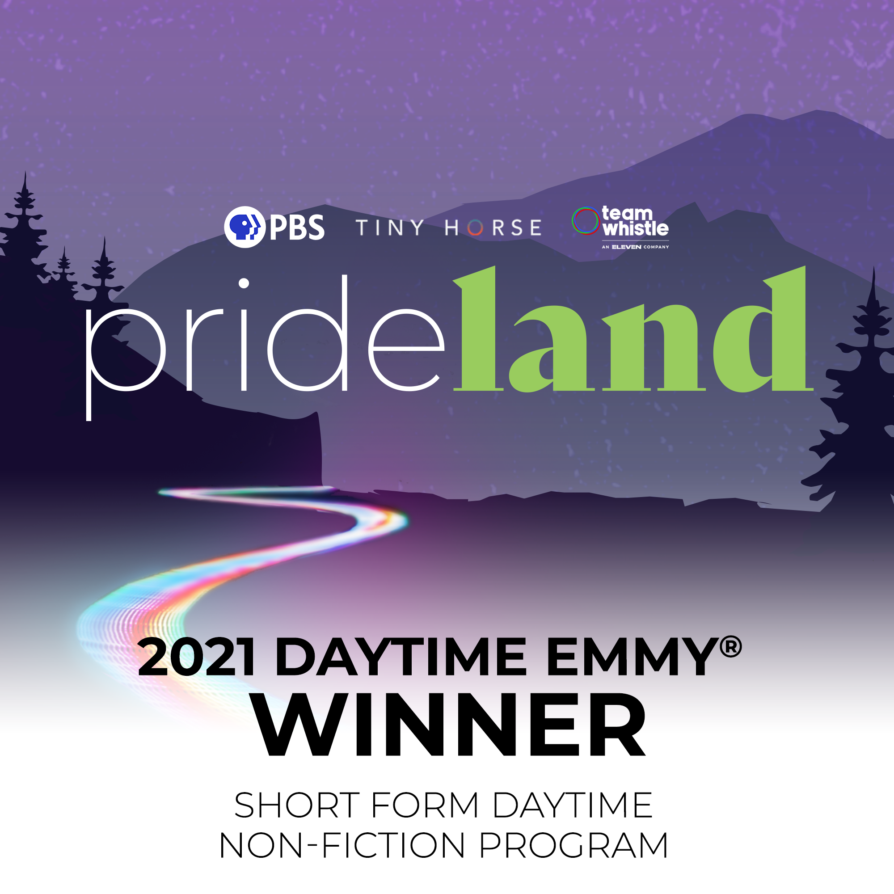
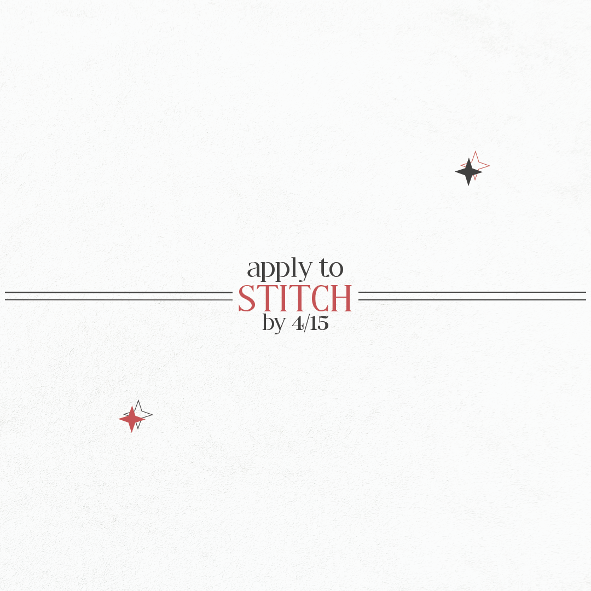
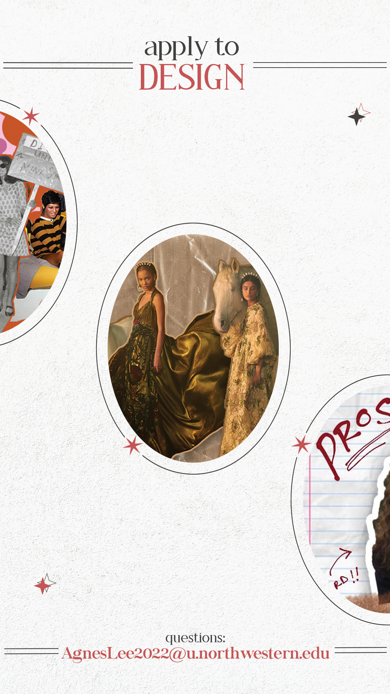
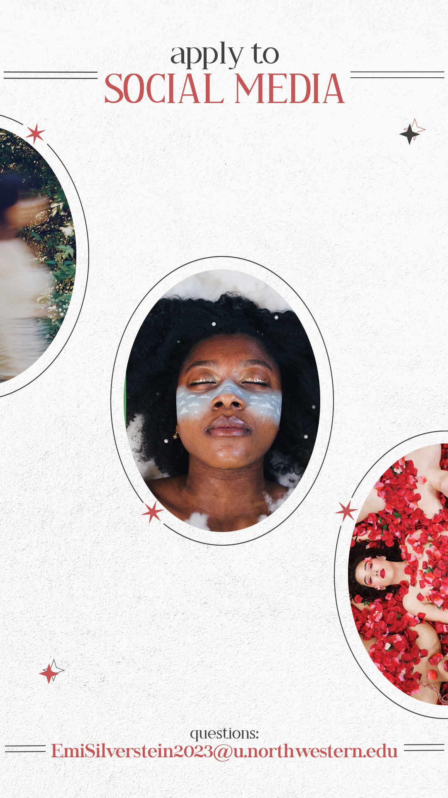

🙂 about
The summer of my sophomore year, I came across an account of a local marketing agency and fell in love with the branding and the work they were doing. I decided to take a leap of faith and apply for an internship, which I was lucky enough to get the offer. Before this internship, my knowledge of social media was from my personal usage and interest, but I never had the opportunity to manage real accounts. However, at Skoop, I was granted access to the food manufacturing brands the agency was working with, such as Ottogi America and A-Sha. Everyday, I used SproutSocial to check and respond to any mentions and comments, a nd developed a structure for the captions on the tri-weekly posts we uploaded per brand. In addition to writing captions, uploading posts, and engaging with the audience, I brainstormed and designed posts as needed, such as pitching recipe ideas and developing moodboards for future photoshoots.


Content developed for Ottogi America
At PBS Digital Studios, I initially felt intimidated as the social media accounts had large followings. Nonetheless, with the help of my manager, I got the hang of utilizing the PBS brand voice to write captions and develop a content schedule that posted 2-3 times a week per platform. Despite the number of followers, engagement was often low. To solve this, I met with social media managers throughout PBS and brainstormed directly with the PBSDS team while also researching different strategies. As Digital Studios is mostly a hub to distribute and showcase video series by third-party producers, I realized that it was difficult to develop fresh content for the Digital Studios platforms. In particular, PBSDS would upload very short GIFs on Instagram, which I found to be ineffective due to the short length of the videos. Instead, I worked on creating platform-specific content and encouraging the producers to utilize best practice when developing social cuts (i.e. creating a square thumbnail, burning in captions). One of my bigger projects was to develop an interactive, multi-part Instagram story series to promote previously published video and make better use of the Instagram story function.


Content developed for PBS Digital Studios
These are also various social media posts I created for on-campus organizations:




